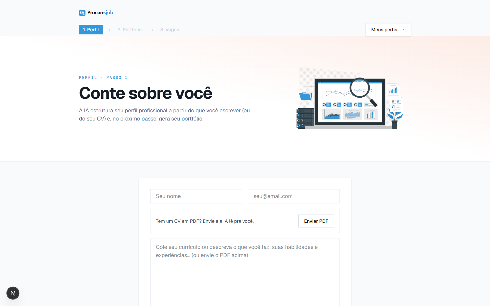
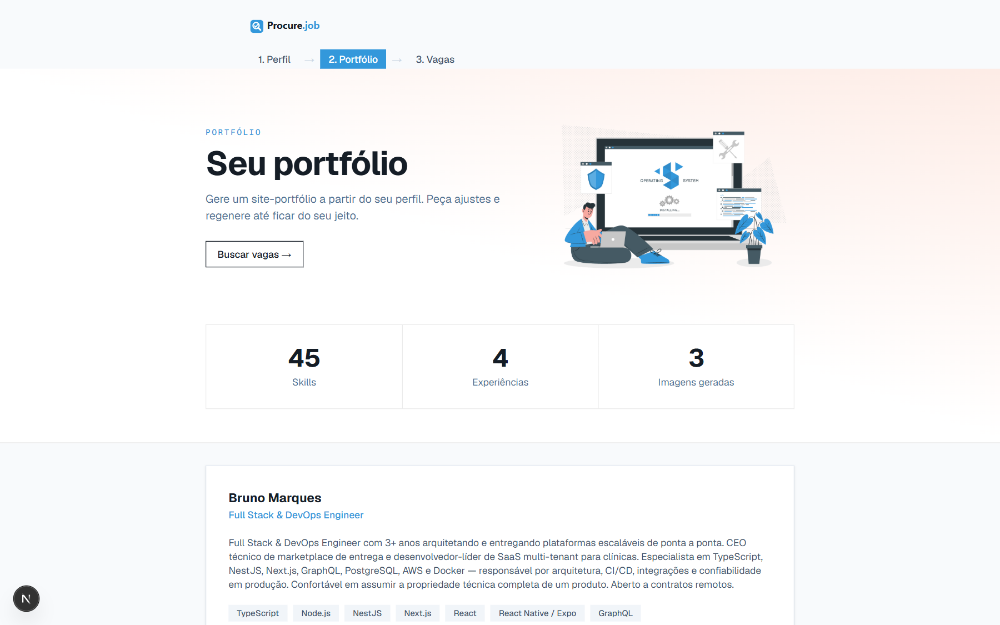
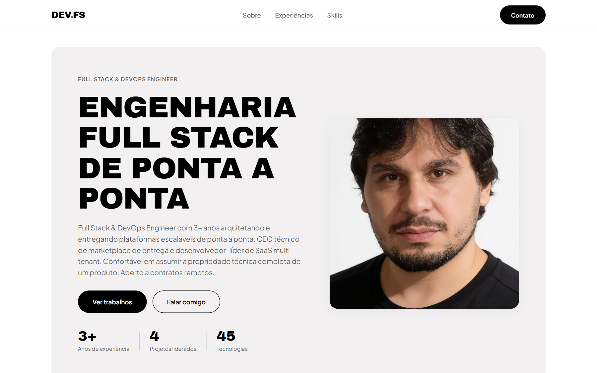
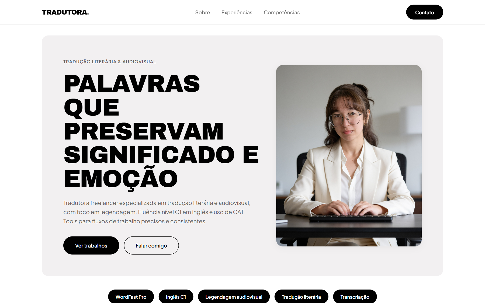
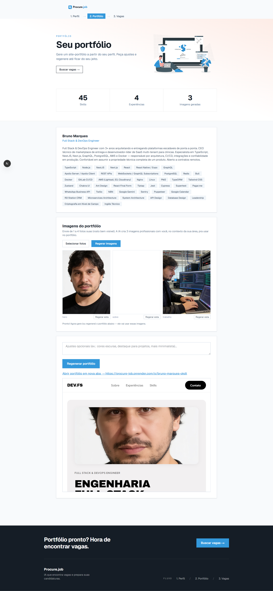
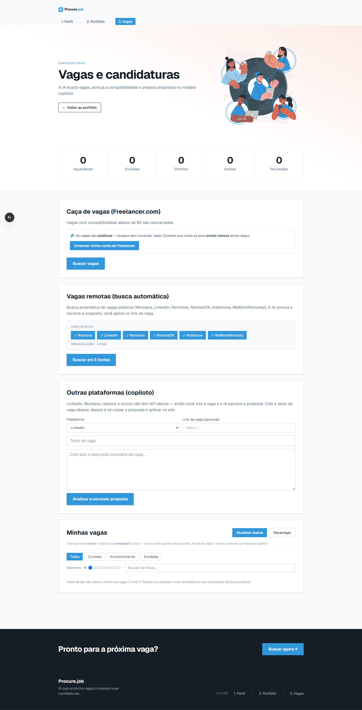

Freelancer bom perde tempo — e vaga — em duas tarefas chatas: montar um portfólio decente e garimpar oportunidades espalhadas por dezenas de plataformas. O Procure.job resolve as duas com IA, num fluxo só.
O problema
A maioria desiste do portfólio e se candidata no escuro, sem saber se tem fit. O resultado é tempo perdido em propostas que não levam a lugar nenhum, e oportunidades boas que passam batido por estarem espalhadas.
A solução
Um copiloto que cobre o fluxo inteiro em três passos — perfil → portfólio → vagas. A pessoa cola o currículo (ou envia o PDF) e a IA estrutura um perfil profissional, gera uma página de portfólio editorial pronta pra compartilhar, e então busca vagas reais pontuando a compatibilidade de cada uma.
Da entrada ao perfil
Cole o currículo (ou envie o PDF) e a IA estrutura um perfil profissional — que você ajusta num editor, com geração de imagens por IA inclusa.


Portfólio gerado pela IA
A partir do perfil, a IA monta uma página de portfólio completa — copy, seções e layout editorial — adaptada à área de cada pessoa. Dois exemplos reais, gerados pelo sistema, de áreas totalmente diferentes:



Busca de vagas com pontuação
A IA varre 6 fontes públicas (Workana, LinkedIn, Remotive, RemoteOK, Arbeitnow, WeWorkRemotely) e ainda caça em marketplaces como o Freelancer.com — encontra as vagas mais relevantes pro perfil, dá uma nota de compatibilidade pra cada uma e já prepara a proposta no modo copiloto.

Tecnologia & decisões
- Front & back: Next.js 16 (App Router), TypeScript, Tailwind v4, Turbopack.
- Dados: Prisma 6 + PostgreSQL, com imagens servidas direto do banco (durável em FS efêmero).
- IA: Claude (Anthropic) para perfil, geração de portfólio e avaliação de vagas.
- Auth & segurança: sessão assinada (HMAC-SHA256) com expiração embutida, múltiplas contas e isolamento de dados por usuário.
- Deploy: Render, com pipeline de deploy automatizado por push.
- Mobile: totalmente responsivo, com sensação de app nativo (PWA, safe-areas, bottom-sheets).
Resultado
Um produto completo, no ar e em evolução contínua — projetado e construído de ponta a ponta por uma pessoa só. Do onboarding ao deploy, da modelagem de dados à última animação de mobile.